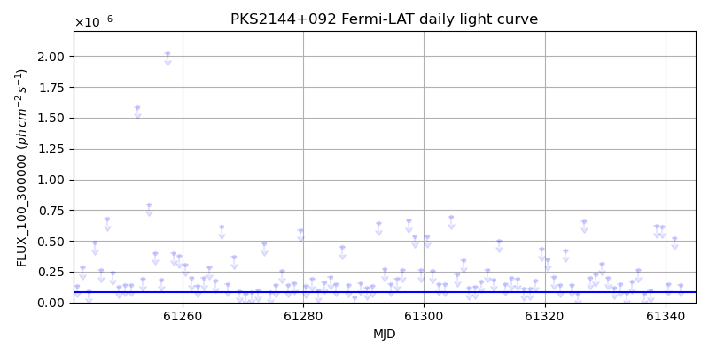
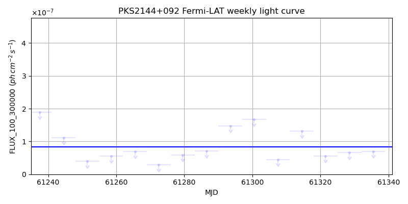
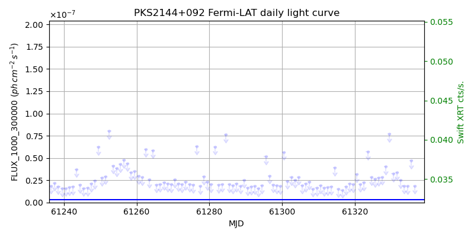
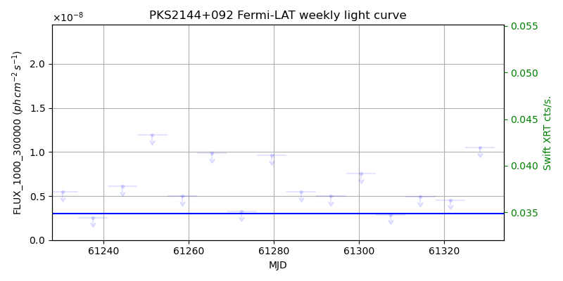

LAT Lightcurve site: https://fermi.gsfc.nasa.gov/ssc/data/access/lat/msl_lc/source/PKS_2144p092
Swift site: https://www.swift.psu.edu/monitoring/source.php?source=PKS2144+092
NED: Query
Time of last update of this page: UT: 2026-10-24 15:28 (MJD: 61337.645)
| Property | Value |
|---|---|
| R.A. | 21:47:10.08 |
| Dec. | 9:29:45.6 |
| z | 1.113 |
| 3FGL SpectrumType | LogParabola |
| 3FGL PL Index | |
| 3FGL Flux_100_300000 | 8.37e-08 1 / (s cm2) |
| 3FGL Flux_1000_300000 | 3.03e-09 1 / (s cm2) |
| 3FGL Flux >200 GeV | 1.45e-13 1 / (s cm2) |
| 3FGL Extrap. Crab >200 GeV | 0.00 |
| 3FGL Flux After EBL Absorption >200GeV | 1.90e-15 1 / (s cm2) |
| 3FGL EBL Crab Fraction >200GeV | 0.00 |

| MJD | dMJD | Flux | dFlux | Frac3FGL | FracCrab>200GeV | EBLFracCrab>200GeV |
|---|---|---|---|---|---|---|
| 61332.50 | 0.50 | 1.45e-07 | 0.00e+00 | 0.00 | 0.00 | 0.00 |
| 61333.50 | 0.50 | 7.34e-08 | 0.00e+00 | 0.00 | 0.00 | 0.00 |
| 61334.50 | 0.50 | 1.68e-07 | 0.00e+00 | 0.00 | 0.00 | 0.00 |
| 61335.50 | 0.50 | 2.64e-07 | 0.00e+00 | 0.00 | 0.00 | 0.00 |
| 61336.50 | 0.50 | 7.14e-08 | 0.00e+00 | 0.00 | 0.00 | 0.00 |

| MJD | dMJD | Flux | dFlux | Frac3FGL | FracCrab>200GeV | EBLFracCrab>200GeV |
|---|---|---|---|---|---|---|
| 61300.50 | 3.50 | 1.67e-07 | 0.00e+00 | 0.00 | 0.00 | 0.00 |
| 61307.50 | 3.50 | 4.54e-08 | 0.00e+00 | 0.00 | 0.00 | 0.00 |
| 61314.50 | 3.50 | 1.32e-07 | 0.00e+00 | 0.00 | 0.00 | 0.00 |
| 61321.50 | 3.50 | 5.58e-08 | 0.00e+00 | 0.00 | 0.00 | 0.00 |
| 61328.50 | 3.50 | 6.62e-08 | 0.00e+00 | 0.00 | 0.00 | 0.00 |

| MJD | dMJD | Flux | dFlux | Frac3FGL | FracCrab>200GeV | EBLFracCrab>200GeV |
|---|---|---|---|---|---|---|
| 61332.50 | 0.50 | 2.50e-08 | 0.00e+00 | 0.00 | 0.00 | 0.00 |
| 61333.50 | 0.50 | 1.86e-08 | 0.00e+00 | 0.00 | 0.00 | 0.00 |
| 61334.50 | 0.50 | 1.82e-08 | 0.00e+00 | 0.00 | 0.00 | 0.00 |
| 61335.50 | 0.50 | 4.71e-08 | 0.00e+00 | 0.00 | 0.00 | 0.00 |
| 61336.50 | 0.50 | 1.86e-08 | 0.00e+00 | 0.00 | 0.00 | 0.00 |

| MJD | dMJD | Flux | dFlux | Frac3FGL | FracCrab>200GeV | EBLFracCrab>200GeV |
|---|---|---|---|---|---|---|
| 61300.50 | 3.50 | 7.55e-09 | 0.00e+00 | 0.00 | 0.00 | 0.00 |
| 61307.50 | 3.50 | 2.88e-09 | 0.00e+00 | 0.00 | 0.00 | 0.00 |
| 61314.50 | 3.50 | 4.92e-09 | 0.00e+00 | 0.00 | 0.00 | 0.00 |
| 61321.50 | 3.50 | 4.55e-09 | 0.00e+00 | 0.00 | 0.00 | 0.00 |
| 61328.50 | 3.50 | 1.05e-08 | 0.00e+00 | 0.00 | 0.00 | 0.00 |
--------------------------------------------------------- Using user-supplied coords: 21:47:10.08 9:29:45.6 2000 --------------------------------------------------------- FLWO UT night of: 2026-10-25 Local Sid. @ Midnight: 01:50 Sunset (-15.0) (local, UT): 18:49 01:49 Sunrise (-15.0) (local, UT): 05:27 12:27 Moonrise (local, UT): Moonset (local, UT): Moon phase: 0.99 --------------------------------------------------------- AzTime LSID UT Obj_el Obj_az Mn_el Mn_az Sep. --------------------------------------------------------- 18:49 20:39 01:49 62.7 140.2 26.2 94.5 47.2 19:19 21:09 02:19 66.2 155.5 32.4 98.6 47.4 19:49 21:39 02:49 67.9 174.1 38.6 103.2 47.6 20:19 22:09 03:19 67.4 193.6 44.7 108.4 47.8 20:49 22:39 03:49 65.0 211.0 50.6 114.6 48.0 21:19 23:09 04:19 61.0 224.9 56.2 122.3 48.1 21:49 23:39 04:49 56.1 235.6 61.2 132.2 48.3 22:19 00:09 05:19 50.6 243.9 65.5 145.3 48.5 22:49 00:39 05:49 44.7 250.5 68.4 162.2 48.6 23:19 01:10 06:19 38.5 256.1 69.4 182.2 48.8 23:49 01:40 06:49 32.3 261.0 68.2 202.0 48.9 00:19 02:10 07:19 25.9 265.3 65.1 218.6 49.1 00:49 02:40 07:49 19.5 269.4 60.8 231.3 49.2 01:19 03:10 08:19 13.2 273.3 55.7 240.9 49.4 01:49 03:40 08:49 6.9 277.2 50.1 248.5 49.6 02:19 04:10 09:19 0.8 281.1 44.3 254.6 49.7 02:49 04:40 09:49 -5.6 285.1 38.2 259.8 49.9 03:19 05:10 10:19 -11.9 289.3 32.1 264.4 50.1 03:49 05:40 10:49 -17.9 293.9 26.0 268.5 50.3 04:19 06:10 11:19 -23.6 299.0 19.9 272.4 50.6 04:49 06:40 11:49 -29.1 304.6 13.8 276.2 50.8 05:19 07:11 12:19 -34.1 310.9 7.8 279.9 51.1 05:27 07:18 12:27 -35.3 312.7 6.2 280.9 51.1 --------------------------------------------------------- Moon up all night, no dark time. Dark hours >55 deg.: 0.00